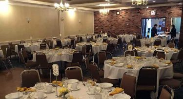
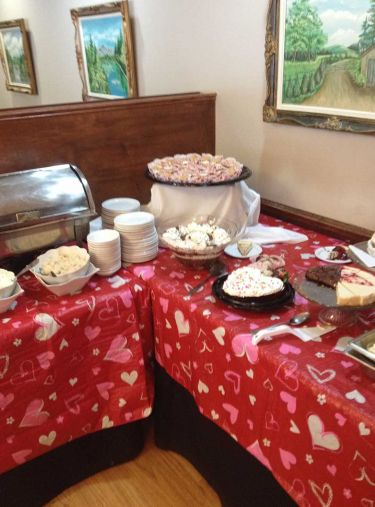

Dining & Sunday Brunch
Roast beef, yellow perch and a Sunday brunch that brings the family together.
Roast beef, yellow perch and a Sunday brunch that brings the family together.

Celebrate here with dinner and dancing for 120, or seat up to 150 for a banquet.

From a platter for the office to a full wedding dinner, bring our kitchen to your guests.
The Duce Family
In 1961, guests pulled up a stool at the counter or settled into a booth by the bow window. Look around the restaurant today and you can still see founder Ernest Duce’s hand in the murals.
Read Our Story